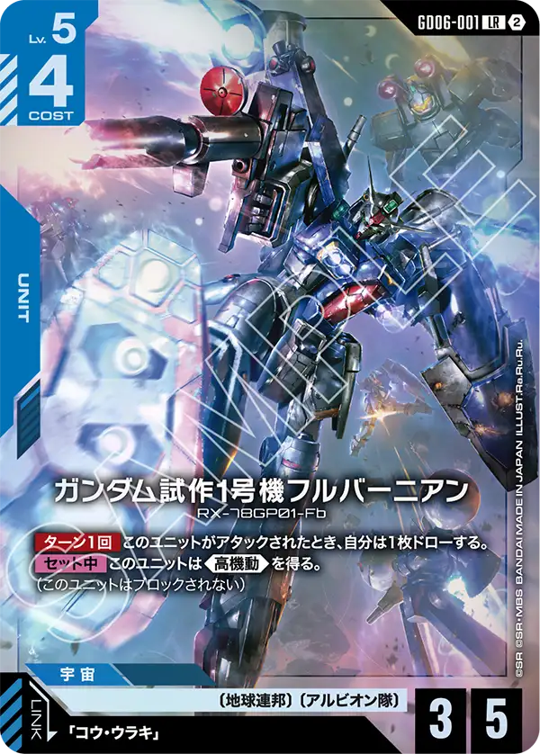
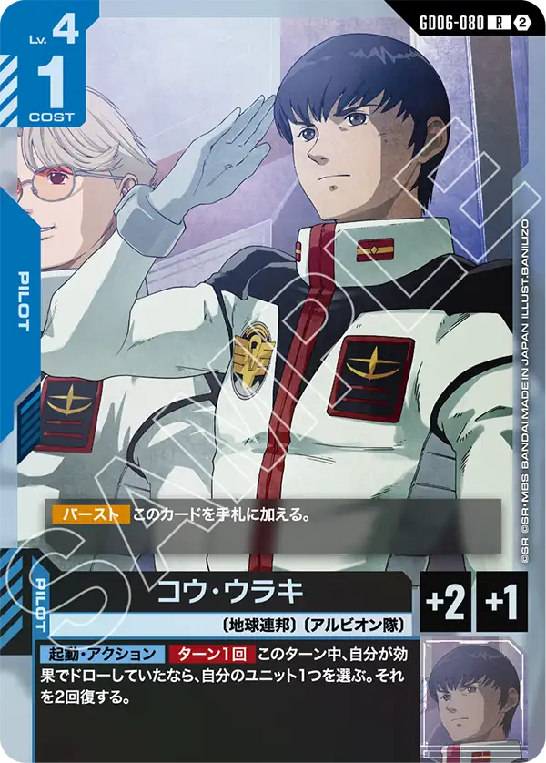
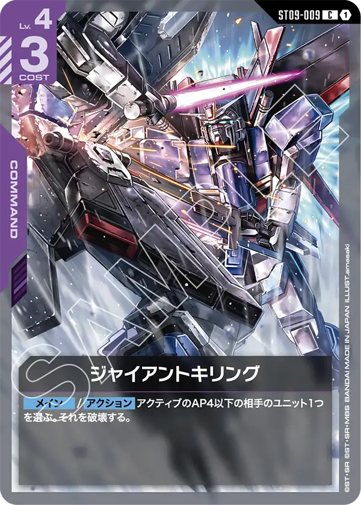
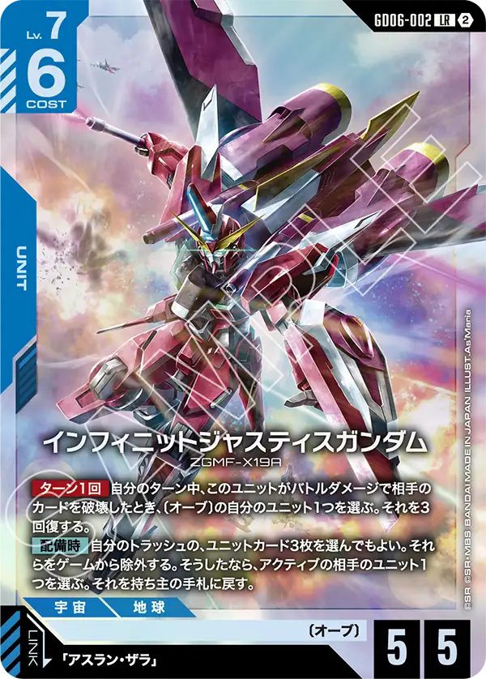
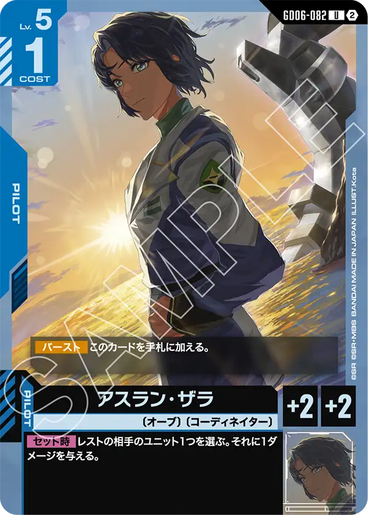
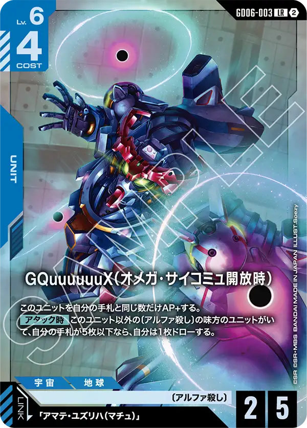
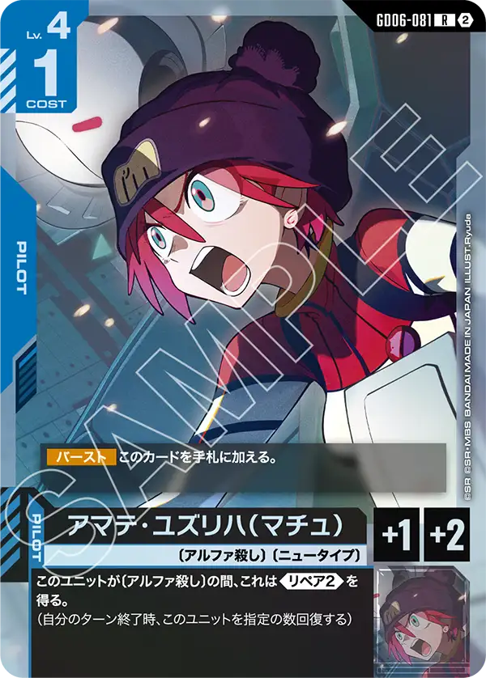

青LRの顔ぶれ
GD06「Stardust Trails」の青LRは3枚。〔アルビオン隊〕のガンダム試作1号機フルバーニアン、〔オーブ〕のインフィニットジャスティスガンダム、〔アルファ殺し〕のGQuuuuuuX（オメガ・サイコミュ開放時）。3枚とも特徴が違い、それぞれ別の特徴の中心に置かれている。
青の新しい特徴は〔アルビオン隊〕（8枚・全部GD06）と〔アルファ殺し〕（10枚・全部GD06・青と紫にまたがる）。〔オーブ〕はGD05からの続きで、GD06では6枚が足された。

ガンダム試作1号機フルバーニアン GD06-001
【ターン1回】このユニットがアタックされたとき、自分は1枚ドローする。 【セット中】このユニットは《高機動》を得る。 (このユニットはブロックされない)
相手がアタックしてくるほど手札が増え、パイロットを付ければ《高機動》でブロックされない。受けても攻めても仕事がある作りで、それがLv.5コスト4に収まっている。
コウ・ウラキ（GD06-080）をセットすると「このターンに効果でドローしていたなら、自分のユニット1つを2回復」の起動効果が使えるので、フルバーニアンがアタックされてドローした後、同じターンに回復まで回る。〔アルビオン隊〕はベースのアルビオン（GD06-122）、ジム・カスタム（GD06-009）、ジム・キャノンⅡ（GD06-010）、コマンド2枚（前線復帰・堅実な支援）を含めて8枚で、ひとつのデッキの核に足りる数が最初から揃っている。
攻撃対象になったら1枚ドローと言う受け身のカードではありながらセット中は高機動を得るため、ブロックも出来ないけどドローさせたくないから攻撃もしにくい面白いカードとなっている。
リンク先のコウ・ウラキ[GD06-080]の効果ドロー時に回復と言う効果も相まって基本は常にほぼフルHPの状態を想定して破壊を考える必要がある。
ただし、素のAPが低いためそのままパイロットをつけていない状態ではジャイアントキリング[ST09-009]で破壊されてしまう可能性があるなど注意は必要。



インフィニットジャスティスガンダム GD06-002
【ターン1回】自分のターン中、このユニットがバトルダメージで相手のカードを破壊したとき、〔オーブ〕の自分のユニット1つを選ぶ。それを3回復する。 【配備時】自分のトラッシュの、ユニットカード3枚を選んでもよい。それらをゲームから除外する。そうしたなら、アクティブの相手のユニット1つを選ぶ。それを持ち主の手札に戻す。
【配備時】の手札戻しはトラッシュのユニットカード3枚が代価で、序盤に落ちた低レベルのユニットがそのまま弾になる。このユニットがバトルダメージで相手のカードを破壊した後の3回復は〔オーブ〕のユニットならどれでも選べるので、自分を直しても前に出た味方を直してもよい。
アスラン・ザラはGD06-082（Lv.5コスト1・【セット時】レストの相手ユニットに1ダメージ）とST04-011の2種がリンクする。〔オーブ〕は19種あり（パラレル版を除く）、GD05のストライクフリーダム（GD05-002）・アカツキ・ムラサメ・M1アストレイに、GD06のアカツキ（シラヌイ）（GD06-005）・ガイアガンダム（バルトフェルド機）・ドムトルーパーが加わる。
配備時にレベルを問わずアクティブのユニットを手札に戻せる強力な効果を持つオーブのユニット。
バトルダメージで相手のカードを破壊することで自分のオーブを回復できるので、ダメージを受けたユニットを回復できる他、ベースやシールドを破壊しても効果が使えるのは非常に強力な効果といえる。
GD05で登場したストライクフリーダムガンダム[GD05-002]とも相性が良く、レベルも7→8と言う組み合わせが取れるため順調につなぐ事ができれば勝利にかなり近づけるだろう。
リンクやセットに関する効果も無いためストライクフリーダムガンダム[GD05-002]とつなげる場合、わざわざパイロットをつけることをしなくてもいいだろう。
同弾で登場したアスラン・ザラ[GD06-082]はセット時効果が非常に強力なので先に使っておいて後半まで進めてこのカードを使う形になるだろう。
デッキ全体のレベルが高くなる可能性もあるのでこのカードを使ってデッキを組む場合にはバランスに気をつけたい。



GQuuuuuuX（オメガ・サイコミュ開放時） GD06-003
このユニットを自分の手札と同じ数だけAP+する。 【アタック時】このユニット以外の〔アルファ殺し〕の味方のユニットがいて、自分の手札が5枚以下なら、自分は1枚ドローする。
素のAP2を手札の枚数で埋める形で、手札5枚ならAP7。他に〔アルファ殺し〕のユニットがいて手札5枚以下なら【アタック時】に1枚引くので、アタックして減った手札をその場で補充し、APを保てる。
マチュはGD06-081（〔アルファ殺し〕の間《リペア2》）とST06-009の2種がリンクする。〔アルファ殺し〕は10枚すべてGD06。青はGQuuuuuuX 3種（GD06-003・006・017）と、HP5以下を手札に戻すコマンド「ガンダムが言ってる」（GD06-101）。紫はGFreD 3種（GD06-051・054・063）、ニャアン（GD06-094）、コマンド「アルファ殺したち」（GD06-114）。GD06-017のGQuuuuuuXは他の〔アルファ殺し〕がいる間《ブロッカー》になり、本体を守る役が同じ特徴の中にいる。
新しく登場したアルファ殺しの中心カード、手札の枚数によってAPが上がる効果は他のカードからインスピレーションを得ているのでは無いかと思うが、自身でカードをドローする効果も持っているのは珍しいと感じた。
ドロー条件も非常に緩いので楽に手札を補充できるだろう。
主なリンク対象はアマテ・ユズリハ（マチュ）[GD06-081]になるだろう、リペアを付与させる効果があるがAPでは無くHPを+2するため手札をしっかり整えなければ十分な火力は出せないだろう。
手札が十分にあればパイロットがセットされていなくても十分な火力は出るので手札をどう確保できるかに集中する必要があるだろう。

カードの効果文は公式カードリスト（2026年10月16日時点）から転記した。誤りに気づいたらXアカウント（@gcg_stats）のDMで教えてほしい。